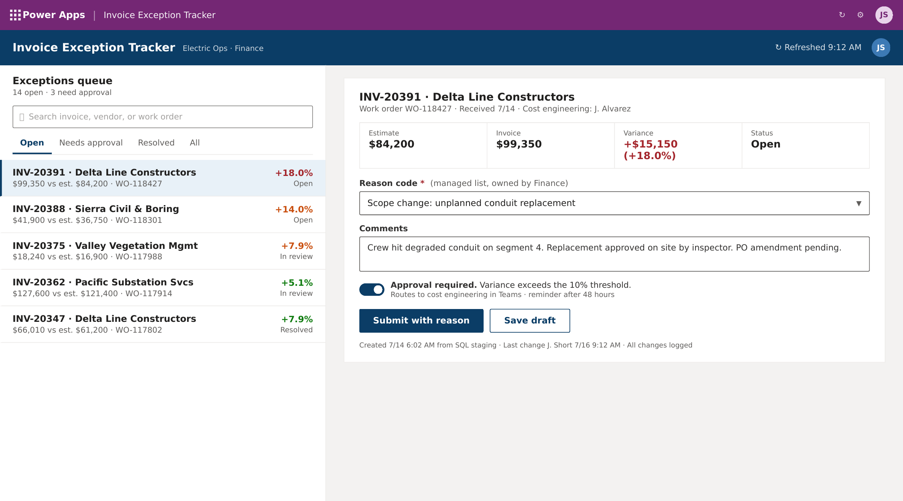
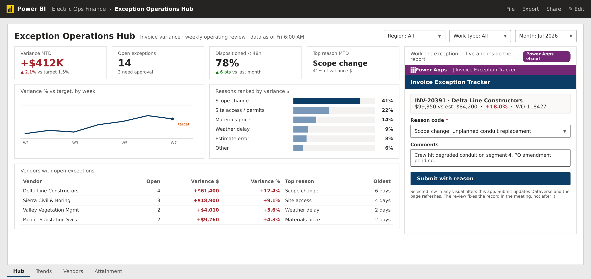
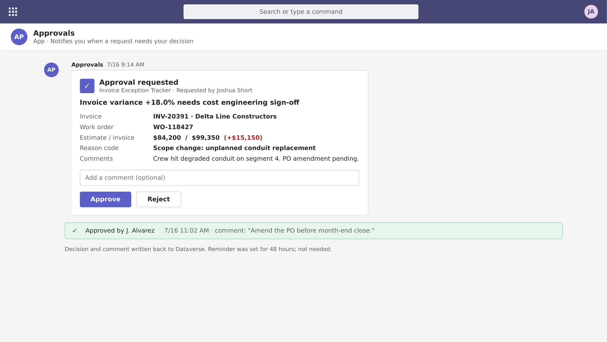
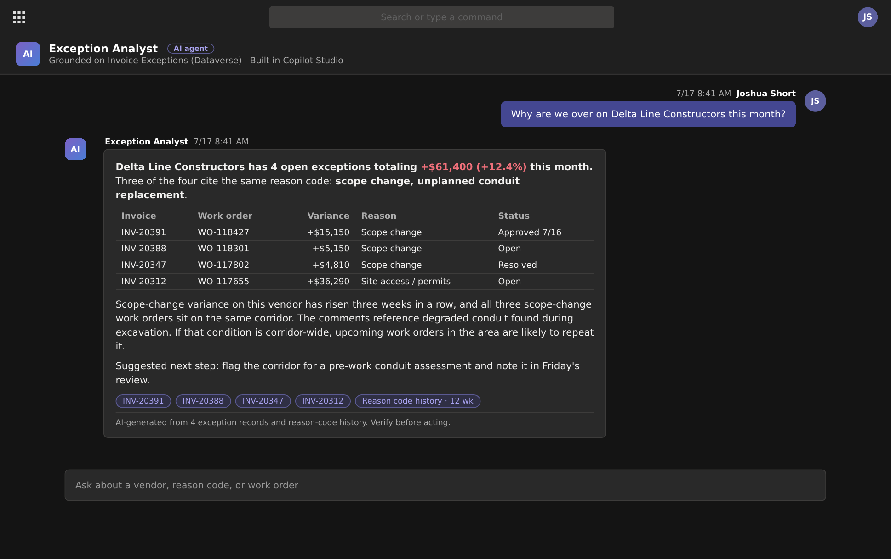

The problem
- Invoices come in above estimate. The reason lives in emails, calls, and memory.
- The weekly review loses time to questioning numbers instead of removing causes.
- Financial controls need every variance tied to a reason code, an owner, and a decision.

FIG. 1 · Canvas app · exceptions queue and disposition form · fictional data
How it works
- Exceptions surface from SQL staging. Only invoices over the variance threshold reach the queue. The analyst investigates, then records the conclusion as a reason code and comment.
- Reason codes are reference data owned by Finance. The list lives in its own table, so codes change without an app release.
- Variances over 10% start an approval. The card lands in Teams, with a reminder at 48 hours and an alert to the owner if the flow errors.
- Access is audited by design. Security roles by team, column security on cost fields, every change logged in Dataverse.
Why a canvas app: the native Power BI visual embeds canvas apps and passes the report's row selection into the app. A model-driven app can be iframed into a report, but without that selection context. Model-driven stays the right call for a case-management back office on the same tables.
Power BI + Power Apps · One surface
The operations and analytics hub
The Power Apps visual embeds the disposition form inside the Power BI report. The review reads the numbers and fixes the record on the same page.

FIG. 2 · Power BI report with the app embedded at right · fictional data
- Click a vendor or invoice row and the embedded form opens on that record. The selection carries into the app, so nobody re-searches the invoice.
- Submit writes to Dataverse, then the app triggers a report refresh. The exception shows resolved while the page is still open.
- The report ranks what matters, the app records the decision. Reasons ranked by variance dollars show which cause to attack first.
- Slicers scope the meeting. Region, work type, and month cut the queue to the room that is looking at it.
Why embed the app at all
Without embedding: the review spots INV-20391, someone writes it down, opens the app after the meeting, searches for the invoice, and the report shows it open until the next refresh. With embedding: the row is clicked, the form is already on that invoice, and the number moves before the meeting ends. No gap where follow-ups get lost.
Power Automate · Copilot Studio
The approval flow and the agent
The same Dataverse tables that run the app and the report feed the approval flow and the agent.

FIG. 3 · Power Automate approval card in Teams · the decision writes back to Dataverse
- A Power Automate flow starts the approval when variance passes the threshold. The approver decides in Teams; decision, comment, and timestamp write back to Dataverse.
- Reminder at 48 hours. If the flow errors, the owner is alerted the same hour. Unanswered approvals are how invoices age out.

FIG. 4 · Copilot Studio agent grounded on exception history · every answer cites its records
- Ask about a vendor, get the pattern. The agent reads exception history in Dataverse, cites the records behind every answer, and suggests the next step.
- It ships scoped. One knowledge source, a credit budget, DLP policies applied. A contained first agent that earns the second one.
One data model · Four surfaces
Architecture
Dataverse holds the exceptions and the reason codes. The app, the report, the flow, and the agent are four surfaces on that one model. Data flows from SAP, the system of record, into SQL Server staging, through an on-premises data gateway, into Dataverse. Dataverse carries the exceptions, the reason codes, the security roles, and the audit log, and is the base for the canvas app. Power Automate watches for variances over the threshold and runs the approval. Power BI is the review page, with the canvas app embedded for write-back. A Copilot Studio agent, grounded on exception history, is a pilot planned after the hub ships, so it can answer questions like why a vendor is over budget this quarter, inside the review itself. The whole design ships as a managed solution through dev, test, and prod pipelines.
FIG. 5 · One Dataverse model, four surfaces · the agent ships as the second release
Assumptions I would validate in week one
- Where estimates and invoice status live today: the ERP directly, SQL staging, or both. This sketch assumes SQL Server in front of SAP.
- What an existing app already captures. If reason codes exist today, the win is the reference table, the embedded hub, and the write-back loop.
- Who owns reason codes and approval thresholds. This design keeps both in Finance's hands.
The same design handles field work as-is: swap invoice exceptions for job completions, keep the reason codes, the flow, and the hub.
Fictional scenario, vendors, and data.
← Back to portfolio